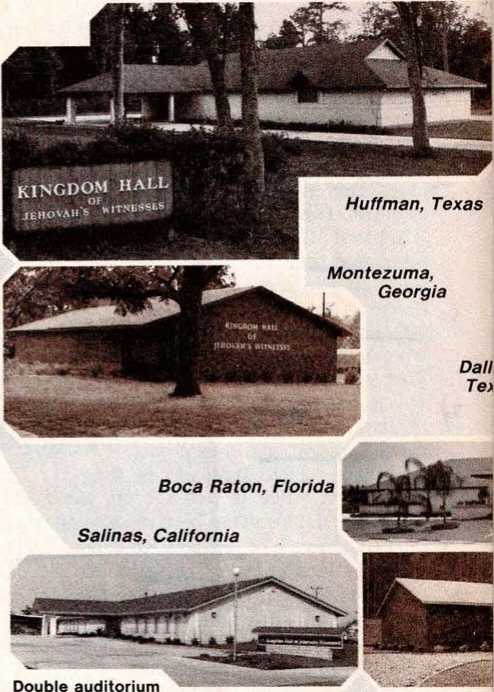
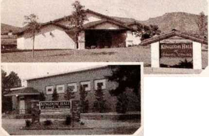
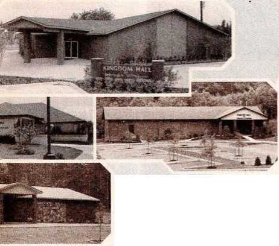

DECEMBER 1987
Vol. 30, No. 12 FOR UNITED STATES OF AMERICA
Meetings for Field Service
NOVEMBER 3O-DECEMBER 6
In offering Bible Stories book
1. Why point to features explained in introduction?
2. What illustrations will you use?
DECEMBER 7-13
When using current magazines
1. How do you adjust your presW( tation to different kinds of people?
2. What specific point will you stress?
DECEMBER 14-20
How will you arouse interest of
1. Older person or parent in Bible Stories book?
Assist Children in Praising Jehovah
!ws incests’ releaseTh^oiC .Ify
Book of Bible Stories has proved to be an invaluable aid both to parents and to youths. One mother was overjoyed when her nine-year-old boy, who previously never enjoyed sitting down to study, came into the house and asked6*Mom, will you get me my new book?”/This is typical of the effect My Book of Bible Stories has had on children. How can we use it more fully to help children praise J ehovanr fif* The Bible Stories book can be used to instill spiritual qualities in the minds and hearts of your children. For example, story 58 emphasizes the qualities of courage and reliance on Jehovah when it tells of David facing the Philistine giant Goliath. (1 Sam. 17:45-51) Sometimes children are called upon to face obstacles that seem giantlike to them. If parents prepare children ahead of time, youngsters will be able to praise the name of Jehovah courageously in spite of pressures and temptations. fc-Prov. 22:6; see Genesis 18:19.
3 It may be that you do not personally have any young children But you may be able to work with young ones in the congregation, assisting them in praising the name of Jehovah. Christian youths are encouraged and motivated when appointed servants in the congregation tako-a personal interest in them. (Prov. 27: 23) Can you spend more time with the
young ones? It is es
when we assist them
7^ j fcially bcncflcia in field service.
OFFERING THE BIBLE STORIES BOOK
4 During the month of December, we will be offering My Book of Bible Stories. Young ones can be helped to present it effectively in the field service. They may even be able to start a study in it.
to make a special effort during December to praise Jehovah in your school. It will Tike courage to do so, but Jehovah will give vou the needed' strength. Make opportunities to acquaint your schoolmates with My Book of Bible Stories.
old will take notice when they .see well-prepared children praising Je-
6 Parents, go over some suggested presentations with your children. Help them use.the scriptures in the Topic for Conversation. Young and hovah.
7 Let us also show our children house“Tecords so they can make return visits on those who show interest. Keep before them the goal of starting home Bible studies. You may /i need to assist tfiem in conducting the C study when they get one started.
8 We want our young people to be among those mentioned by the psalmist who said:\Every breathing thing —let it praise Jah. Praise Jah, you people!” J(Ps. 150:6) Pray for Jehovah’s guidance in rendering the needed assistance.
2. Children in the Bible Stories book?
DECEMBER 21-27 How will you respond to 1. Holiday greetings?
2. “I’m very busy”?
3. “Don’t you know what day this is?”
DECEMBER 28-JANUARY 3 In offering magazines during the holidays
1 . What article will you feature? 2. Why avoid controversy?
TOPIC FOR CONVERSATION Religion That Has Real Value.
2 Tim. 3:1, 2, 5—A mere form of worship is not enough.
John 4:23—Religion that God approves.
Witnessing as a Family During December
1 “Your people will offer themselves willingly on the day of your military force.” Those words of Psalm 110:3 well describe Jehovah’s active organization today as men, women, and children zealously share in proclaiming the Kingdom good news. During the month of December, many family members will have excellent opportunities to expand their ‘willing service’ by increasing their share in the field ministry. If we are to ‘buy out the opportune time,’ we will need to make definite plans and carefully schedule our time in advance.—Col. 4:5; 1 Cor. 9:26.
2 Why not make witnessing a family project? Sit down together and determine the possibilities for increased field service during the month of December. With all family members contributing their expressions, you may be pleasantly surprised at how much good can be accomplished. —Prov. 11:14; 15:22.
3 Many young ones can take full advantage of time off from school to engage in the field service during the worldly holiday season. If you are a student, can you join the many other youths who will be auxiliary pioneering in December? If so, you will enjoy many rich blessings. Mothers may find that having the children out of school provides an excellent opportunity to devote more time to field service with their children. Is it possible for you fathers and mothers to auxiliary pioneer with your children? Or, with all family members working together, can you help at least one or perhaps more members of the family to auxiliary pioneer? Will you make a special effort to engage in field service each weekend during December? How encouraging and unifying this would be for all in your family!
MAKE DEFINITE PLANS
4 After carefully considering the possibilities for increasing your (Continued on page 2, col. 1}
WEEK STARTING NOVEMBER 29
Song164
10 min: Local announcements. Theocratic News. Review magazine presentations for Saturday magazine activity.
20 min: “Assist Children in Praising Jehovah.” Questions and answers. Demonstrate how a parent can help a child prepare the current Topic for Conversation and tie it in with the offer of the Bible Stories book.
15 min: “Witnessing as a Family During December." Questions and answers. Have exemplary family discuss prospects for increased service as a family in December and how they will make up a schedule for their service. Conclude with encouragement for all who qualify to share in field service, offering Bible Stories book on first Sunday in December.
Song 126 and concluding prayer. >
WEEK STARTING OfCEMBERjs'p
Song
10 min: Local announcements. Discuss magazine presentations and encourage all to support magazine witnessing on the second Saturday.
20 min: Conducting Effective Bible Studies. Encourage all to conduct Bible studies, including family studies, in a way that reaches the heart. Review some of the points outlined in the chart on page 24 of the No-
Witnessing as Family (Cont’d) service as a family, you will need to make definite plans and work hard to follow through. Take just a few moments to write down goals for each member of the family and the daily field service schedule for each one. Perhaps this can be noted on your family theocratic calendar. Remember, if you do not schedule it, the time will come and go, and you may not have reached your goal.
5 Of course, the congregation service overseer will want to make plans now for special group witnessing activity during this period. Particularly will this be so in connection with Christmas Day and New Year’s Day, both of which fall on Friday this year. Field service arrangements can be made for all three days of these long weekends. In making these arrangevember 1, 1986, Watchtower under the question “How can you be sure of reaching child’s heart?” as well as some of the points in the article “When You Teach, Reach the Heart,” found in the August 1,1984, Watchtower, pages 13-17. Use an effective pinn9<jir to d-emonstrite some of these points in conducting a Bible study, using one or two paragraphs of chapter Lpf Live Forever book.
15 rnfn^HaveDook study conductor interview individual(s) or a family from his study group. Draw out how long they have been in truth, what made the truth appeal to them, what trials they had to overcome in order to come in the truth, what obstacles they have had to deal with to remain steadfast in the truth, and so forth.
Song 10 and concluding prayer.
WEEK STARTING DECEMBER 13
SongJ.89
10^ Local announcements and accounts report. Mention acknowledgments of any contributions sent to the Society, including those for the Society Kingdom Hall Fund and for helping missionaries attend the 1988 conventions. Outline special arrangements for witnessing during the holiday ^season^—
20 min: '“Presentmg^nc Good News —Use Effective Introductions.” Questions and answers. Demonstrate the two introductions fea-ments, we suggest that special consideration be given to householders who may be sleeping late on holiday mornings. A number of congregations have had very good success by scheduling field service on holidays a little later than usual in the morning and again in the afternoon.
6 Experience has shown that December is an especially productive month for preaching the good news. Often, particularly on the holiday itself, more people are at home, and they are in a more relaxed frame of mind. Those who are religiously inclined are often willing to talk about spiritual matters. We want to take the fullest advantage of these circumstances to preach the good news and thus ‘offer ourselves willingly’ as a family ‘on the day of Jehovah’s military force.’ tured in paragraph 4. Analyze with audience why these are effective.
15 min: Local needs or Do You Ex- /j perience the Greater Happiness of Giving?, tfllk by elder based on first article in November 22, 1987, Awake!
Song 184 and concluding prayer.
WEEK STARTING DECEMBER 2Q^/
Song 194 j'A'' /ft//
15 iriin: Local announcements V selected Announcements from Our Kingdom Ministry. Demonstrate magazine presentations-for” use on fourth Saturday, developed with holiday season in mind. Discuss with audience how to respond to holiday greetings in field service. (See 1930-1985 Index, heading “House-to-House Preaching,” subheading “Christmas season.”)
20 mirf: "Anticipating the Needs of the Harvest.” Question-and-answer consideration of paragraphs 1-11. Read paragraphs as time permits. Call attention to pictures on pages 3 and 4.
10 m/ff: “Progressing With the Theocratic Ministry School.” Discussion by Theocratic Ministry School overseer. Highlight changes in 1988 Theocratic Ministry School. Encourage local publishers to make good use of the Theocratic Ministry School in order to become more effective in their Christian ministry.
Song 165 and concluding prayer.
,J/^EEK STARTING DECEMBER 27
Song 93 3 2
12 min: Local announcements. Encouragement for all to support arrangements for holiday
this weekend, including the first Sunday of January. Highlight literature offer for January.
18 min: “Anticipating theNeeds of the Harvest.” Question-and-answer consideration of paragraphs 12-18. Read paragraphs as time permits. Call attention to pictures on pages 5 and 6. Give encouragement to support Society Kingdom Hall Fund.
15 min^*Helping Irregular Publishers.” Discussion between secretary and another elder who conducts”a Congregation Book Study. Include suggestions that will help local publishers who are irregular.
Song 116 and concluding prayer.
Copyright © 1987 by Watchtower Bible and Tract Society of New York, Inc., and International Bible Students Association. Our Kingdom Ministry (USPS 295-360) is published monthly by Watchtower Bible and Tract Society of New York, Inc., 25 Columbia Heights, Brooklyn, N.Y. 11201. Second-class postage paid at Brooklyn, N.Y., and at additional mailing offices. POSTMASTER: Send address changes to Watchtower, 25 Columbia Heights, Brooklyn, N.Y. 11201. Printed in U.S.A.
1 During the past year many brothers in all parts of the country have had the privilege of attending dedication programs for new Kingdom \ Halls. These have certainly been joyful occa-' signs. Brothers have related interesting facts about the history and progress of the work in their respective localities. They have shown how Jehovah prospered their efforts in the ministry, resulting in many new ones becoming part of the A'ongregation. It has been observed, time and 'again, how Jehovah has also opened the way for congregations to obtain property and build new places of worship.
2 Because of the rapid growth of the organization during recent years, the Society Kingdom Hall Fund was es-' tablished in 1983 to **meet the grd^ung demand for new Kingdom Halls. Since that time, in the United States, . more than 150,-.
000 new Witnesses have been baptized.
This outstanding in-। crease has required the formation o? hundreds of -new congregations, thus creating a need for hundreds of new Kingdom Halls. Since it was set up, the Society Kingdom Hall Fund has been made available for ) the construction of 387 new Kingdom Halls for congregations in the 48 states under the United States branch. Obviously, the need for new Kingdom Halls continues and many more must be built as Jehovah continues to ‘speed up’ the ingathering work.—Isa. 60:22.
3 In the September 1983 Our Kingdom Ministry, the point was made that Kingdom Hall ( construction had not kept pace with the formation of new congregations. Why? The article stated: (“Basically the problem is economic. Whereas it is true that some expansion into outlying areas has been difficult or impossible because the brothers have not been able to build or otherwise provide appropriate Kingdom Halls in those areas, the problem the organization faces today primarily is found in the urban areas where property valne« havp skyrocketed to such an extent that individual congregations, including large ones, have been unable to purchase even a site for the construction of a Kingdom Hall. In addition, exorbitant real estate prices have placed existing buildings suitable for co~n-version into Kingdom Halls out of the reach of the brothers.” The brothers have responded wholeheartedly to this need and many Kingdom Halls have now been constructed in such urban areas.
Piggott, Arkansas
GIVING IN FULL MEASURE
4 The spirit of giving originates with Jehovah God who is the most generous Giver of good gifts. (Jas.
1:17) He is generous with all and
Meadowlands, he richlV blesses Minnesota those who in imitation of him practice giving freely and in full measure. (Acts 20:35) This was the experience of many in the first century who demonstrat
ed appreciation for spiritual provisions by generously caring for the material needs of fellow Christians in another area. (2^Cor. 9:6, 7) In encouraging this spirit among the brothers today, appointed overseers are fulfilling what was written about them at Isaiah 32:8. ---
5 Abilities and opportunities to give vary according to our individual circumstances, but . upon examining.nnr personal situation, we may r find that we spend much on ourselves for conve- ’ nience, pleasures, and even luxuries, in addition to day-to-day needs. (Luke 21:4; Matt. 6:25, 33) At times, it may be necessaryfto deny ourselves some of the things we would really like to have in order to support Jehovah’s house of worship. It is not unusual'to observe this taking place • among Jehovah’s people today. (Prov. 3:9,10) It is this self-sacrificing love for the worldwide
3 1 7 QpR KINGDOM MINISTRY, DECEMBER 1987
c
mittee reporting on the construction of a double Kingdom Hall over two successive weekends said that they followed the suggestion in the December 1986 Our Kingdom Ministry insert about having only skilled help and local volunteers present. At no time were there more than 200 volunteer workers on the site. This worked very well and all were kept busy. No one worked through the night.
brotherhood in obedience to Jesus’ “new commandment” and example that makes Jehovah’s Witnesses stand out today as true disciples. (John 13:34, 35) To the extent that we imitate Jehovah and prove obedient to Jesus’ commandment, we can expect’to reap the joyful results.
REGIONAL BUILDING COMMITTEES
6 In anticipation of the needs of the harvest, arrangements have been made for more Regional Building Committees to assist in the instruction of Kingdom Halls. Positive results are being seen as capable men have become involved in organizing the work.
Som£ committees have projects scheduled a 5/ear or more in advance. Obviously, much work needs to be accomplished in the days ahead. Although more Kingdom Halls are needed, it is preferable that skilled craftsmen not be asked to work with more than one Regional Building Committee. Many of the brothers have congregation and family responsibilities and these cannot be neglected. For the sake of maintaining proper balance in these and other matters, this seems to be the reasonable course. (Phil. 1:9,10; 4:5, 6) It may be that some congregations planning to build will be asked to delay their project for a while so that the schedule for Regional Building Committees does not become overloaded.
8 Each Regional Building Committee contacts the skilled craftsmen from within its own area prior to the construction dates of a planned project, giving notice sufficiently in advance so that the volunteers can adjust their scb^lulysj accordingly. Careful planning has enabled Regional Building Committees to determine howJ many workers will be needed for each phase of a construction project. These are scheduled to arrive at tfie_llme. that their particular skill is needed. Thus, they are fresh and ready to work when that phase of the project is to begin. When their services on a project are no longer needed, they return home and share in the local congregation meetings and activities along with their i ^families.
n ' 9 Regional Building Committees are continu-f’ally training spiritually qualified brothers so - they can assist in a meaningful way on future building projects. One Regional Building Com-
CONTRIBUTIONS TO THE SOCIETY KINGDOM HALL FUNC ASSISTED IN THE CONSTRUCTION OF ALL THE KINGDOM HALLS PICTURED IN THIS INSERI
LOCAL BUILDING COMMITTEES
10 If a local building committee^has in mind asking for assistance from the Regional Building Committee, it would be advisable for them to contact the Regional Building Committee at the outset, even before property is purchased. Thereafter, as progress is made, matters can be closely coordinated. Much of the work can be
organized by the local elders and those from neighboring congregations who have volunteered. Ordinarily, the general work force also comes from local and nearby congregations, while the Regional Building Committee schedules additional volunteers who have skills not available locally. The Regional Building Committee is in a position to offer suggestions as to how they can proceed. The cooperation of both
Remodeled gymnasium Wahoo, Nebraska
Henderson, Nevada
Prince Frederick, Maryland
Mt. Gilead, North Carolina
the local building committee and the Regional Building Committee is essential if a project is to run smoothly. With careful planning and good communication, potential problems can be avoided.
11 It may be that a congregation has brothers who are qualified tn build nr rAmndel its Kingdom Hall, but advice or other specific assistance is needed. In this case, there is no objection to the brothers’ proceeding on their own to the extent possible. At the same time, the brothers can feel free to call on the Regional Building Committee for the additional help that is needed. By seeking specific advice or assistance from the Regional Building Committee, schedules can be worked nut in such a way that skilled workers will not be away from their families and home congregations longer than is actually necessary.
CURRENT NEEDS
12 Jehovah’s people are a forward-looking people. It is obvious that Jehovah is bringing the increase. Last service year the number of congregations in the United States increased by 211. This is more than four each week! We must anticipate the needs of this harvesttime. No doubt the continued generous spirit of giving on the part of the brothers will allow the Society Kingdom Hall Fund to provide financing for more Kingdom Halls across the country. The funds that have been contributed for the advancement of the Kingdom Hall construction work are an evidence that Jehovah’s faithful servants are quick to see a need and are willing to meet that need in a whole-souled manner.
13 It is certainly most commendable that many congregations have eliminated extra or unnecessary features from their construction plans and in this way have reduced costs. It can be observed from the Kingdom Halls shown in this insert that congregations have built modestly, though attractively, and thus have not imposed a burden upon their brothers who assist with construction or upon the resources of the Society Kingdom Hall Fund. (Phil. 2:4) Regional Building Committees are encouraged to give suggestions to this end.
14 As congregations have come to hear of the needs of their brothers in other places, they have responded just as the Corinthians did in the first century when they heard of the needs of their Judean brothers. Paul encouraged them to volunteer assistance in a material way. He wrote: ^‘Nevertheless, just as you are abounding in everything, in faith and word and knowledge and all earnestness and in this love of ours to you, may you also abound in this kind giving.”)(2 Cor. 8:7) Thus Paul associates the giving of needed funds with faith and knowledge and love, and encourages such giving. He reminded the Corinthians of the principle that to sow sparingly is tn reap sparingly and then encouraged themk^Let each one do just as he has resolved in his heart, not grudgingly or under compulsion, for God loves a cheerful giver.”/Although giving was entirely voluntary, no one needed to feel he could not share, for Paul said:Q‘God, moreover, is able to make all his undeserved kindness abound toward you, that, while you always have full self-sufficiency in everything, you may have plenty for every good work.”4-2 Cor. 9:6-9.
15 This type of giving by rhe brothers is not taken for granted. The Society regularly -receives Iptters of approoi^tinn for the Sooioty
Lincoln, Maine
Kingdom Hall Fund. One congregation writes ( “All the brothers and sisters would like to express appreciation for assistance through the Society Kingdom Hall Fund. What a wonderful provision this is from Jeho- Fort Smith, Arkansas vah.’J Thgy go on to relate: Q'The community was truly given a fine witness as to the love and unity of Jehovah’s people. We have heard many favorable com-
ments.”J brothers
ding another project, the “It is the most outstanding build-
ing in this area, from the standpoint of looks and quality of construction. Recently a man and his wife came to the hall and asked for a subscription to The Watchtower and Awake! and a book explaining the beliefs of Jehovah’s Witnesses. He said that hg was really impress'd rfy'rihe building, of the hall. Many local people who had been opposed to Jehovah’s Witnesses came by during the open house and looked at the building and were very impressed. We are truly thankful to Jehovah for the fine provision of this much-needed new Kingdom Hall. And we thank you brothers for_your assistance in the financing of itJ The generous giving on the part of Jehovah’s people must certainly bring joy to his heart, as it does to all the brotherhood.
16 It is still necessary to ask many congregations that have a pressing need for a new Kingdom Hall facility to delay their projects until such time as sufficient funds become available to provide needed loans. Each month as additional contributions are receivetfan<Uoans.are repaid. the Society will progressively contact these congregations to let them know that funds are available.
FUTURE PROSPERITY
17 Jehovah’s promise of continued prosperity for his organized people is being fulfilled today. (Isa. 54:2, 3) Are we individually doing what we can in cooperation with him in this regard? Our efforts in the field ministry are bound to result in further ingathering of new ones into the fold.
This reouires^the providing of appropriate accommodations.
for new congregations.
Your generous contributions- to the Society Kingdom Hall Fund have
will surely con-, tinue to assist in caring for future increase by providing funds to construct new Kingdom Halls.
18 Jehovah’s .modern-day servants will continue to show the same snirit.
as that encouraged by Paul at 2 Corinthians 8:13-15: [‘For I do not mean for it to be easy for others, but hard on you; but that by means of an equalizing your surplus just now might offset their deficiency, in order that their surplus might also come to offset your deficiency, that an equalizing might take place. Just as it is written: ‘The person with much did not have too much, and the person with little did not have too little.”7With this generous spirit moving Jehovah’s devoted servants to give freely of their personal talents, skills, hard work, and material possessions, his name will be exalted even more with the coming of many more dedicated praisers into the one fold of true worshipers.—Rev. 7:9.
• Literature offer for December: My Book of Bible Stories for a contribution of $2.50. The “Look!” brochure may also be offered for a contribution of 30c. January and February: Any two of the older pocket-size books the congregation has in stock for a contribution of $1.00. May include Choosing, • Commentary on James, • "Eternal Purpose,” Evolution (old edition), Good News, Holy Spirit,* Peace and Security (old edition), This Life, Truth, and World Government. (’These may be ordered from Brooklyn if needed.) Congregations may request credit for all books obtained by publishers and pioneers. The pioneer rate for the pocketsize books for this campaign is 30c each for regular and special pioneers. March: Life—How Did It Get Here! By Evolution or by Creation! for a contribution of $2.50. Small-size books arc $1.25.
• The presiding overseer or someone designated by him should audit congregation's accounts on December 1 or as soon as possible thereafter.
• It is suggested that all congregations display the new yeartext by January 1, 1988.
• Congregations should begin ordering bound volumes of The Watchtower and Awake! for 1987 on their December literature orders. (See the 1987 Cost List, paragraphs 7-10, for the date you should submit your order.) The bound volumes will be available in Dutch, English, French, German, Greek, Italian, Japanese, Portuguese, and Spanish. Until the bound volumes arc available and shipments are made, these will appear as “Back Ordered" on congregation invoices. Bound volumes are controlled stock items (See the Cost List, paragraphs 23-25.) and will be charged at $6.00 each for congregation, public, and pioneers.
• New Publications Available:
My Book of Bible Stories —Faeroese United in Worship of the Only True God —Ponapean, Turkish, Yoruba
You Can Live Forever in Paradise on Earth (Small size) —Bicol, Eflk
Enjoy Life on Earth Forever! —Quiche "Look! I Am Making All Things New” (Brochure) —Faeroese, Hausa,
Igbo, Kosraean The Government That Will Bring Paradise —Gun, Hausa, Vietnamese
Watch Tower Publications Index for 1985 —Japanese
Watch Tower Publications Index for 1986 —English
Tract No. 13 —Croatian, Danish,
Norwegian, Thai
Tract No. 15 —Danish
Tract No. 16 —Danish
• New Cassette Recordings Available: Beware of Losing Faith by Drawing Away From Jehovah—Drama (single cassette; congregation and public: $2.00; pioneers: $1.75) —Danish The First of Chronicles (set of two;
congregation and public: $3.00; pioneers: $2.50) —German
The Second of Chronicles (set of two; congregation and public: $3.00; pioneers: $2.50) —German
Helping Irregular Publishers
1 Jesus said: “Everyone that hears these sayings of mine and does them will be likened to a discreet man, who built his house upon the rockmass.” (Matt. 7:24) Getting the sense of Jesus’ words and being properly motivated will cause one to produce fine works, including preaching the good news. Such rightly motivated obedience provides a rocklike foundation that will not wash away during storms of adversity.
2 It is for good reason that we want to help one another share in the preaching work to the fullest extent permitted by our individual circumstances. Some among us are irregular publishers, and this is of much concern. What could cause one to let an entire month go by without having some share in the vital preaching and disciple-making work?
3 Some may have been seriously ill, and others may have put off field service until late in the month, only to find themselves caught up in unforeseen circumstances that prevented them from getting out in service. Others may lack appreciation for the ministry as a treasure of service that should be given priority. (2 Cor. 4:7) Pressure from an unbelieving mate or other relatives has been a discouraging factor at times. A failure to maintain good personal study habits and regularity in meeting attendance has affected still others, so that they lost their sense of urgency regarding the nearness of the end of Satan’s world. (2 Pet. 3:11, 12) Something has affected their heart. Therefore they are not motivated to speak out of its abundance. (Matt. 12:34) Whatever the reason, we want to help them.
WHAT THE ELDERS CAN DO
1 Elders should strive to know the circumstances and needs of all in the congregation so as to render loving assistance. In their meetings the elders should take note of any who may have become irregular publishers and determine who can help
Proverbs, Ecclesiastes, The Song of Solomon (set of two; congregation and public: $3.00; pioneers: $2.50)
—German
Album of Hebrew Scriptures—Volume 1, Genesis to Ruth (set of 18 cassettes in album; congregation and public: $30.00; pioneers: $20.00)
—German
Deuteronomy (set of two; congregation and public: $3.00; pioneers: $2.50)
—Italian (Continued on page 8, col. 3) them and how this might be done. They may also address the problem when considering local needs for the Service Meeting. The secretary should note any trend toward irregularity in field service when posting the Congregation’s Publisher Record cards.
WHAT BOOK STUDY CONDUCTORS CAN DO
5 Each month the secretary should provide Congregation Book Study conductors with a list of those who fail to report field activity, so that prompt assistance can be given. (See Our Kingdom Ministry for May 1984, page 7.) The study conductor should kindly approach irregular ones to ascertain what may be hindering them and how he can be of assistance. (Prov. 27:23) Most irregular ones will appreciate help. After getting to know the person’s circumstances, the conductor should make definite arrangements to work personally with him or to have another mature publisher or pioneer do so. Giving irregular ones practical suggestions on preparing a schedule suited to their individual circumstances may also be helpful. Can they plan to share regularly in field service the first Sunday of each month or on the second and fourth Saturdays? If transportation is a problem or they need help with small children, the conductor can enlist the aid of other willing publishers.
6 When visiting the book study groups, the service overseer can make arrangements to call on irregular ones with the study conductor. Thus two mature brothers will be able to share in giving counsel and then help such ones to build a rocklike foundation of obedience to Christ’s command to preach and make disciples. They may thus be motivated to place the preaching work high on their list of priorities. (Rom. 10:10) Let us exert ourselves in this way to show our love for “those related to us in the faith.’’ i —Gal. 6:10.
SEPTEMBER SERVICE REPORT
|
Pubs. |
Av. Hrs. |
Av. Mags. |
Av. R.V. |
Av. Bi.St. | |
|
Sp’l Pios. |
256 |
128.5 |
92.6 |
53.5 |
5.6 |
|
Pios. |
57,881 |
85.6 |
44.6 |
28.0 |
2.7 |
|
Aux. Pios. |
36,820 |
60.3 |
31.0 |
16.2 |
1.4 |
|
Pubs. |
639,046 |
9.8 |
6.8 |
3.6 |
0.4 |
TOTAL 734,003
Newly Dedicated Ones Baptized: 2,333
( PRESENTING THE GOOD NEWS
Use Effective Introductions
1 Much good can be accomplished in our field ministry if we have prepared effective introductions. If we do not get the attention of the householder at the outset so as to start a conversation or place literature with him, we may not stimulate sufficient interest to warrant a return visit with the goal of starting a home Bible study. Therefore, much depends on how effective our opening words are. How can we make our introductions more effective?
PURPOSE OF INTRODUCTIONS
2 To start with, we must have clearly in mind the purpose of introductions. The School Guidebook says: “The introduction . . . should arouse interest in the subject. It ought to capture the attention of your audience and prepare them to give favorable consideration to what follows.” The book adds: “One of the best ways to arouse interest ... is to get your audience involved.” (See page 113, paragraphs 1 and 2.) How can we do this in the field ministry?
3 The introductions found on pages 9-15 in the Reasoning book were prepared with the foregoing in mind. Analyze these. Note how they have been designed to capture interest and direct the attention of the householders to the subjects being considered. Many have used the introductions in the Reasoning book with good results. One sister said that by using a variety of introductions, her field service has become more enjoyable and she has been made more conscious of trying to engage people in conversations. Concerning the suggestions in the Reasoning book, she said: “They really work.”
4 What introductions have you found effective with the current Topic for Conversation? Have you tried those listed under the heading “Bible/God” on page 10 of the Reasoning book? One of them can be used with our current Topic for Conversation as follows: “I am glad to find you at home. I am sharing with my neighbors an encouraging thought from the Bible. Have you ever wondered what makes religion have real value with God?” Another introduction could be: “We are encouraging folks to read their Bible. The answers that it gives to important questions often surprise people. For example, notice how 2 Timothy 3:1, 2, and 5 shows why God does not accept some of the worship engaged in by religious people.”
5 You may find it appropriate to use other introductions in addition to those included in the Reasoning book. Much will depend on the types of persons you meet in your territory. However, you will find it beneficial to follow the pattern of the introductions given in the Reasoning book. They present issues that concern people. They get the householder involved in the conversation. They are brief and to the point. There is much benefit in carefully examining the introductions presented in the Reasoning book, even if at times your territory may call for introductions not included in the book.
. 6 On the other hand, using the introductions in the Reasoning book word for word has been very effective. Some have read appropriate introductions directly from their Reasoning book when speaking over the intercom in high-security buildings. This has enabled them to be fluent and to the point, and to capture the householder’s attention. They have been invited into the building to continue the conversation. In one large city, this method has been the most effective means of reaching people in high-security buildings.
7 We want to keep in mind how important our opening words are in the field ministry. So much depends on their effectiveness. Like Solomon, we too should thoroughly search for delightful words as we prepare to use effective introductions in our house-to-house work. The Reasoning book will help us in this search.—Eccl. 12:9, 10.
Schedule for congregation studies in the book United in Worship of the Only True God:
December 6: Pages 70, par. 1
to 74, par. 10 December 13: Pages 74, par. 11
to 80, par. 6 December 20: Pages 80, par. 7
to 82, par. 12 December 27: Pages 83, par. 13
to 90, par. 8
Study material is apportioned according to number of scriptures used. These should be read and applied as time allows.
THEOCRATIC NEWS
♦ The district convention in Aruba was attended by 960, and 21 were baptized.
♦ Two district conventions held in the Bahamas were attended by 2,334, with 34 baptized.
♦ Bolivia reported a fine month of activity in July with peaks of 5,401 publishers and 9,009 Bible studies. Congregation publishers averaged 13.6 hours in the field ministry.
Announcements (Cont’d)
Proverbs, Ecclesiastes, The Song of Solomon (set of three; congregation and public: $4.50; pioneers: $3.75)
—Japanese Isaiah (set of four; congregation and public: $6.00; pioneers: $5.00)
—Spanish
1 We rejoice greatly that Jehovah has given us “the tongue of the taught ones.” (Isa. 50:4) The Theocratic Ministry School has been an important teaching instrument that Jehovah has used to provide us with theocratic education for more than 44 years. Now we have our new Theocratic Ministry School Schedule. Have you carefully reviewed the instructions for the school during 1988?
2 The No. 1 assignment, Bible highlights, and No. 2 talk will follow the same pattern as during the previous year. But talks No. 3 and 4 will differ in that they will take us into two teaching aids we use extensively in the field ministry, namely, You Can Live Forever in Paradise on Earth and Reasoning From the Scriptures.
3 The No. 3 talk will be based alternately on the Reasoning book and the Live Forever book. When based on the Live Forever book, it should be assigned primarily to sisters who are new in the truth or younger in years. This will give them valuable experience and familiarity with this field instrument. The No. 4 talk will be regularly based on the Reasoning book.
4 As we prepare for the school each week, our progressively covering the Reasoning book will enable us to become much more familiar with what it contains, and then we will more readily think of using it when questions or objections arise. This will help us to become more effective in the field ministry as our educated tongue speaks the truth with greater persuasiveness.—Compare Acts 17:2, 3.
8